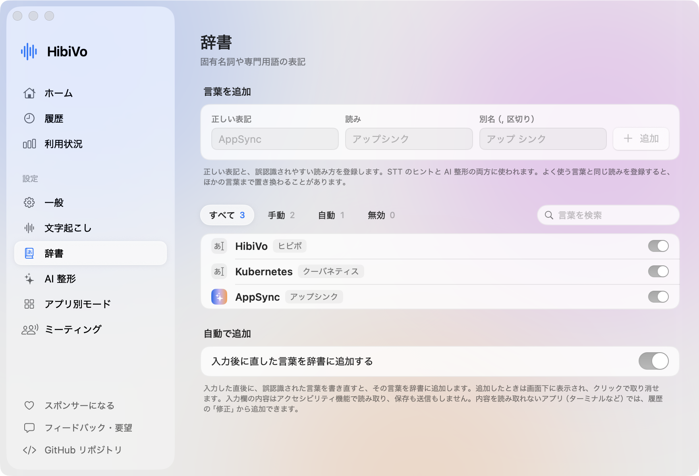
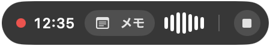
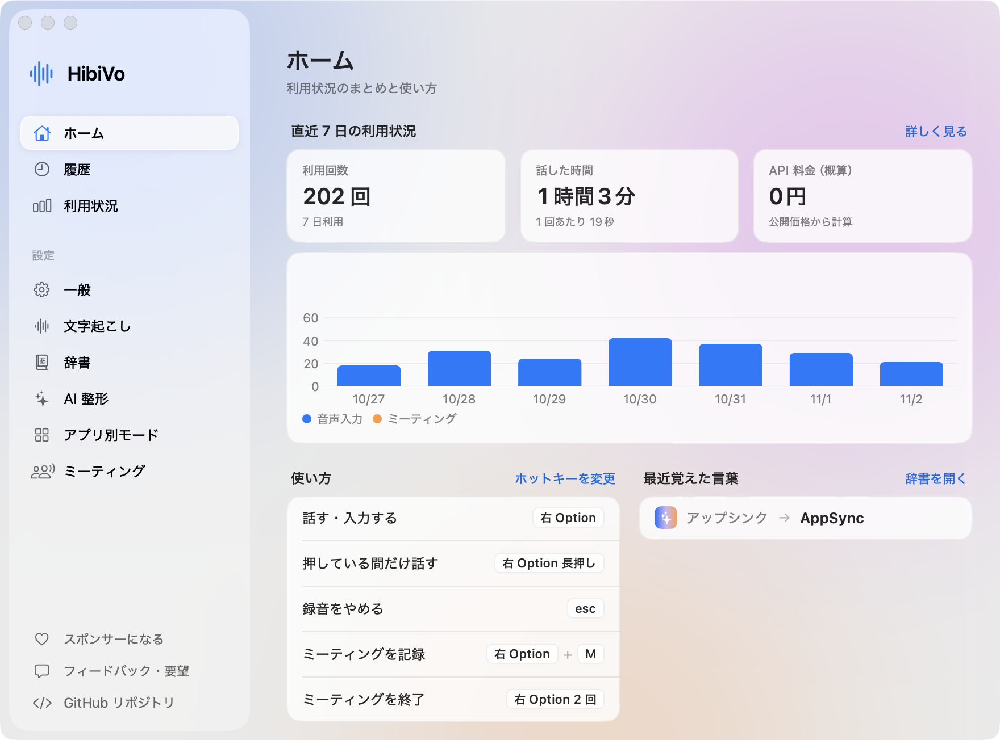

考える速さで、書いていく。
キーボードでは追いつかない考えも、話せばそのまま文章に。言い直しは AI が整え、専門用語は直すたびに覚えます。使うほどあなたの言葉になじんでいく、Mac の音声入力アプリです。
- 無料・オープンソース
- macOS 14 以降・Apple Silicon
- macOS 26 以降は API Key なしで使える
外部の文字起こしや AI 整形を使うときだけ、その料金を選んだサービスに支払います。必要なものと料金
- 押す
- 話す
- もう一度押す
昨日送ったデザイン案なんだけど、見出しの色をもうちょっと明るくして、余白も広げてほしい。 金曜までにできるか教えて。
キーを押すと、もう一度試せます(Mac なら右 Option キーでも動きます)。これはページ上の再現で、マイクは使いません。
タイピングが、考えるじゃまをしていませんか
長い返信を打っているうちに、言いたいことを見失う
話せば、考える速さのまま書けます。言いよどみや言い直しは AI が取り除きます。
AI への長い指示を、毎回キーボードで打っている
Claude Code や ChatGPT への指示も、話せば項目ごとの箇条書きに。ターミナルでは自動でその書き方になります。
同じ社名や専門用語を、何度も直している
一度直せば、辞書が覚えます。次からは正しく入りやすくなります。
会議でメモを取っていると、話に集中できない
自分の声も相手の声も、まとめて文字にします。記録は HibiVo に任せられます。
同じ話でも、相手に合う文章に
言いよどみや言い直しを AI が取り除きます。話していないことは足しません。アプリに合わせて 4 つの整え方を使い分けられ、自分で指示を書く Custom もあります。
話した言葉
えーと昨日送ったデザイン案なんだけど、ボタンの色を、あ、いや、見出しの色をもうちょっと明るくして、あと余白も広げてほしい。で金曜までにできるか教えて
出力は一例です。話した内容や使うモデルによって少し変わります。
えーと昨日送ったデザイン案なんだけど、ボタンの色を、あ、いや、見出しの色をもうちょっと明るくして、あと余白も広げてほしい。で金曜までにできるか教えて
話した言葉をそのまま入力します。AI を使わないので、API Key も要りません。
昨日送ったデザイン案なんだけど、見出しの色をもうちょっと明るくして、余白も広げてほしい。 金曜までにできるか教えて。
チャットやメモに。口調は変えず、読みやすく整えます。
昨日お送りしたデザイン案ですが、見出しの色をもう少し明るくして、余白も広げていただきたいです。 金曜までにできるか教えていただけますか。
メールや社外のチャットに。敬語に直します。話していない挨拶は足しません。
昨日送ったデザイン案なんだけど、 - 見出しの色をもうちょっと明るくする - 余白を広げる をしてほしい。 金曜までにできるか教えて。
Claude Code や ChatGPT への指示に。挙げた項目を箇条書きにします。
アプリごとに自動で切り替え
Mail では Business、Terminal では Prompt。どのアプリでどのモードを使うかは自由に変えられます。
AI 整形には API Key が必要です
Anthropic、Amazon Bedrock、Google Gemini、OpenAI 互換 API から選べます。料金は使ったサービスに支払います。整形に失敗しても、話した内容はそのまま入力します。
一度直せば、辞書が覚える
社名や製品名、専門用語を、何度も教えなくていい。入力された言葉を直すと、HibiVo が気づいて辞書に登録し、次から正しく入りやすくなります。登録は通知をクリックすれば取り消せます。ターミナルなど内容を読み取れないアプリでは、履歴の「修正」から登録できます。
いま入った文章を直すと
アップシンクAppSyncの設定を確認します
辞書に追加しましたアップシンク → AppSync
取り消す次からは
AppSyncの設定を確認します

会議に集中しよう。記録は HibiVo に
右 Option を押しながら M で開始します。マイクとシステム音声をいっしょに文字起こしするので、オンライン参加者の声も残ります。
- macOS 26 以降なら、標準の文字起こしで API Key も料金も不要です。話者を区別するには Soniox を使います。
- 議事録(概要、決定事項、ToDo など)も作れます。AI 整形と同じプロバイダか Claude Code を選びます。既定はオフです。
- 録音や文字起こしに同意が必要な場面では、参加者に伝えてから使ってください。

2026-11-02_14-00-05.md
# ミーティング 2026-11-02 14:00 - 開始: 2026-11-02 14:00:05 - 終了: 2026-11-02 14:32:41(32 分) - 音声: マイクとシステム音声(相手の声) - 話者は音声から自動で推定しています。番号は実際の人物と一致しないことがあります。 --- [00:00:12] **話者1** では、来週のリリースの確認から始めます。 [00:00:20] **話者2** テストは木曜までに終わる見込みです。 [00:00:31] **話者1** わかりました。金曜の朝に公開しましょう。

どこに何を送るか、自分で選べる
- 文字起こしが終わると、音声は Mac に残りません
- 音声入力とリアルタイムのミーティングでは、音声をメモリ上で使うだけで、ディスクには保存しません。「終了後にまとめて」のミーティングだけ、文字起こしが終わるまで Mac に一時保存して、終わると削除します。文字起こしできなかった場合も 7 日で削除します。
- macOS 標準なら、音声は Mac の外に出ません
- macOS 26 以降の既定です。Soniox、Gemini、ElevenLabs を選ぶと音声はそのサービスへ、AI 整形を使うと文章は選んだプロバイダへ送られます。
- API Key は Keychain に保存します
- 設定ファイルには書き込みません。履歴は Mac に平文で最大 200 件保存し、保存しない設定にもできます。
- 解析やテレメトリはありません
- アプリは利用状況を送信しません。このページにも解析ツールは入れていません。更新の確認で GitHub に問い合わせますが、これもオフにできます。ソースコードはすべて公開しているので、中身を確かめられます。
その文章、次は話してみよう
HibiVo は無料です。3 つの手順で始められます。
ダウンロードする
ディスクイメージ(.dmg)を開き、HibiVo.app を「アプリケーション」にドラッグします。Apple の公証を受けたアプリです。
2 つの権限を許可する
ホットキーと貼り付けのためのアクセシビリティと、マイクを許可します。
右 Option を押して話す
終わったらもう一度押します。押している間だけ話すこともできます。キーは Fn、右 Command、⌃Space からも選べます。
必要なもの
- Mac
- macOS 14 以降、Apple Silicon
- 文字起こし
- macOS 26 以降は標準の文字起こしを API Key なしで使えます。それより前の macOS では Soniox、Google Gemini、ElevenLabs のいずれかの API Key が必要です。
- AI 整形(任意)
- Anthropic、Amazon Bedrock、Google Gemini、OpenAI 互換 API のいずれか。なくても Raw で使えます。
- 料金
- アプリは無料です。外部の文字起こしや AI 整形を使うときだけ、その料金を選んだサービスに直接支払います。HibiVo が料金を受け取ることはありません。